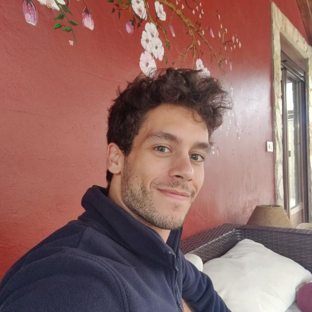

About me
Hey! I'm Lucas, CEO and co-founder of CloudClerk, and part of the founding team behind Numia and Orbital. I'm deeply driven by data and complex systems, and I spend most of my time turning one into solutions for the other. Since my master's degree, where I first dove into innovation and company building, startups have been my default mental state. I'm a workaholic by nature, which helps when your brain never stops looking for the next problem worth solving.
I'm originally from Spain (Alcalá de Henares), but I've lived and worked across Europe — from a forest outside Helsinki (Finland) to Florence (Italy) and Cannes (France). I operate fluently in Spanish, English, and French, and I've shortly dabbled in Chinese, though execution elsewhere took priority.
I'm competitive by design. I hold a red belt in taekwondo (one step away from black, by choice rather than ability), reached the top 2% of League of Legends players worldwide, and now focus that same intensity on bouldering. I also love surfing — infrequently practiced, but deeply appreciated.
Although now I'm too obsessed with building projects, I've read obsessively. My favorite genre has always been fantasy novels (to name a few of my long-time favorite authors: Dumas, Emilio Salgari, Laura Gallego, and Patrick Rothfuss), although there are many socio-economics-related titles that I'm passionate about.
I really enjoy debating — about anything interesting, from philosophical topics to politics, economics, or even fruit rankings. That aren't many things I enjoy as much as exchanging opinions on topics that aren't simple or don't have a clear answer. And finally, I'm a huge fan of food. Cooking with the people I care about, or going with them to new restaurants is one of the things that I enjoy the most.